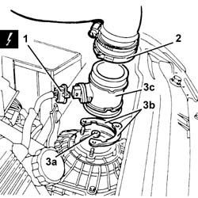

1056B10 air flow meter - r + r
- Path
- Procedures > 10 ENGINE > 1056 PETROL INJECTION SYSTEM > 1056B multi-point injection system (mpi) > 1056B10 air flow meter - r + r
- Kind
- repair procedure (removal / refitting; the operation number is the code)
- Applies to
- engines: 2.5 V6, 3.2 V6; all production periods
- Interactive page
- https://sloeber94.github.io/elrnDB-a156/en/#/3237534
Applies to: engines: 2.5 V6, 3.2 V6; all production periods
 Removing
Removing
 Refitting
RefittingEnsure that the ignition key is in the stop position, then disconnect the battery negative terminal.
 | Name | Connector |
|---|---|---|
- | Battery |
1. Disconnect the electrical connection from the air flow meter.
| Name | Connector |
|---|---|---|
1 | Air flow meter |
Move the relays fastened to the battery cradle to one side.
2. Disconnect the pipe carrying air to the throttle body from the flow meter.
3. Undo bolts (3a), remove half-rings (3b) and air flow meter (3c).

Applies to: engines: 2.5 V6, 3.2 V6; all production periods
Refitting
RemovingFit the air flow meter and fix it using the half-rings and the nuts.
Connect the hose carrying air to the throttle body to the air flow meter.
Replace the relays in their seats on the battery case.
Connect the electrical connection to the air flow meter.
Connect the battery terminal (-).